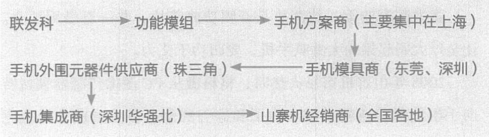

价值故事 中国手机30年
彼时的山寨机供应链可以划分为三部分：
首先，联发科是整个供应链的最顶层，负责手机芯片的研发。
其次，手机方案商对手机软件和功能进行设计和定义，而凭借联发科的“交钥匙”方案，整个设计过程可以说不难。由于他们拥有软件/IP 设计能力，产业链地位仅次于联发科。
最后，手机集成商负责外形设计，无技术无售后。
此外，联发科到手机集成商之间，还有一批元器件(液晶屏、功率放大器等) 供应商和手机模具商。

山寨机产业链
在这根链条里，钱在反向流动——山寨机向最终用户收钱，然后钱一层层向产业链前端返回，让整条产业链上的每个环节都得到滋养。
这就好像树叶在进行光合作用。成千上万的山寨机就是树叶，从空气中捕获碳，从而成就一棵树的不断生长。
山寨机谢幕，消失的是那些依靠市场饥渴而存在、没有自我积累的山寨整机和山寨机经销商们。而留下来的，是整个中国电子、微电子的研发生产供应链。
139